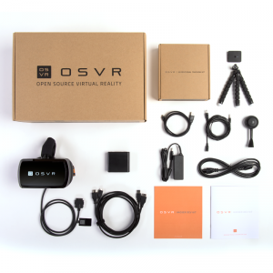

This is a GitHub Contribution to the OSVR Project as I develop my application using VR
Maintained at http://www.coolgames.net/OSVR_HDK

OSVR HDK V1.3 Specified at http://www.razerzone.com/osvr-hacker-dev-kit
After unpackaging and connecting to i5 13" MacBook Air with Belkin HDMI adapter
MacBook Air Specs at http://www.everymac.com/systems/apple/macbook-air/specs/macbook-air-core-i5-1.3-13-mid-2013-specs.html
Belkin Adapter Specs at http://www.belkin.com/us/F2CD079-Belkin/p/P-F2CD079;jsessionid=FC414A2C1175813017B9E6B935F28382/
<<<<<<< HEAD
https://github.com/OSVR/OSVR-Docs/blob/master/Getting-Started/Installing/linux.md and paid attension to https://github.com/OSVR/OSVR-Core/wiki/Linux-Build-Instructions#known-issues-temporary
I am on Ubuntu and read
https://github.com/OSVR/OSVR-Core/wiki/Linux-Build-Instructions#known-issues-temporary
and tried #338 since I don't get a message
00f65308ff988a325a08cb41c529f5d826138005
Added device: com_osvr_Multiserver/OSVRHackerDevKit0
when I start the osvr_server on HDK V1.3.
I did create the udev rule at
I am making notes and assume I do a
sudo make install
after the make -j4 For the record I also had to move server for SteamVR:
mkdir -p ~/.steam/steam/steamapps/common/SteamVR/drivers/osvr/bin/linux64
then
cp /usr/local/drivers/osvr/bin/linux64/driver_osvr.so ~/.steam/steam/steamapps/common/SteamVR/drivers/osvr/bin/linux64/